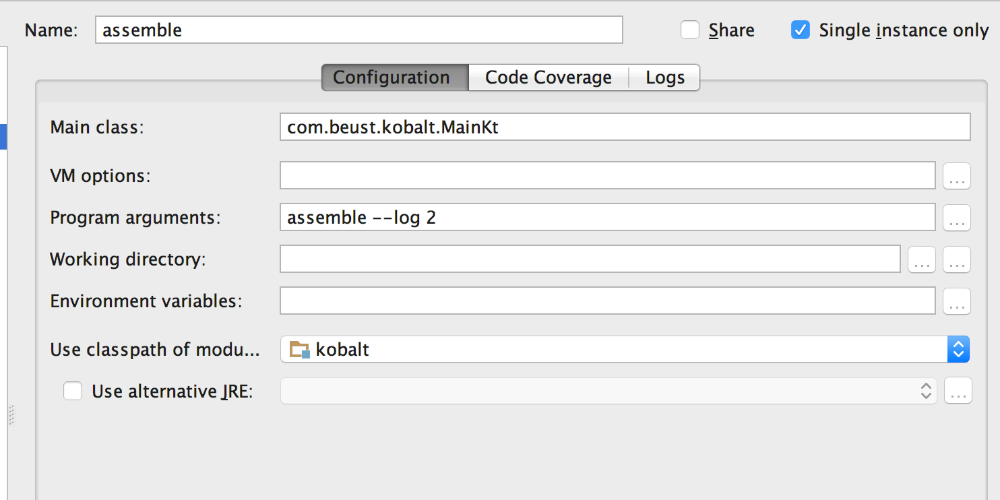

Kobalt is licensed under Apache 2.0
You can contribute code and report issues at the Kobalt Github Repo
#kobalt channel.
kobalt-users, the mailing-list for Kobalt users.kobalt-dev, the mailing-list for Kobalt developers. This mailing-list is for people interested in writing code for Kobalt, either the core, or writing plug-ins, or just to follow various technical discussions about Kobalt's internals.Working on the Kobalt code base with Intellij IDEA is very easy.
First of all, edit the file src/main/resources/kobalt.properties and set it
to a nonexistent version. For example, if the current version is 1.0.50,
set it to 1.0.51.
kobalt.version=1.0.51
When you launch Kobalt from IDEA with a nonexistent version, Kobalt will show a message saying that it couldn't locate that version and instead, it will use the classes generated by IDEA. This way, you will always be running the files that you just modified with IDEA. On start up, Kobalt will display a message looking like:
Couldn't find .../kobalt-1.0.51.jar, using ...
Note that at the moment, Kobalt expects to be located in $HOME/kotlin/kobalt.
Next, add Kobalt as a dependency to your build file:
dependencies {
compile("com.beust:kobalt:")
}
Next, create a launch configuration in IDEA.
Kobalt's main class is com.beust.kobalt.MainKt. Here is a typical launch configuration:

A few observations:
--dev, which will add the class
name and thread information to each log line.